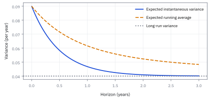
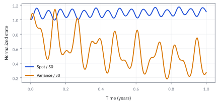
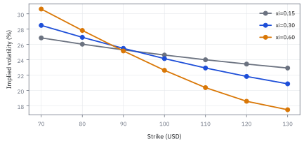
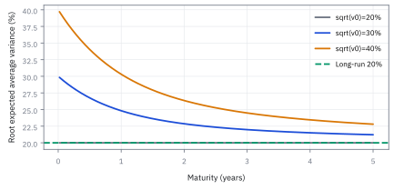
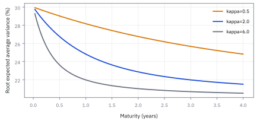

14.7 Stochastic Volatility and the Heston Model
ให้ความผันผวนเปลี่ยนตามเวลาเพื่ออธิบายราคาที่โค้งเอียง
หุ้น \$100 call strike 100 อายุ 1 ปี ความผันผวนวันนี้ 30% ถูกดึงกลับหา 20% ด้วยความเร็ว 2 ต่อปี ตามแบบจำลอง Heston ความผันผวนเฉลี่ยตลอดปีเท่าไร และ call ราคาเท่าไร?
เฉลย: variance เฉลี่ยตลอดปี 0.0616 หรือความผันผวน 24.8% ไม่ใช่ 20% หรือ 30% ราคา Heston \$10.43 ต่ำกว่า Black–Scholes ที่ 24.8% ซึ่งให้ 10.69 เพราะความผันผวนเองก็สุ่ม ราคานี้เท่ากับ implied volatility 24.15%
Worked Example — โจทย์และสิ่งที่ให้มา
โจทย์ให้อะไรมาบ้าง: ให้ spot เริ่มต้น \$100, strike \$100, maturity 1 ปี, อัตราดอกเบี้ย 3%, dividend yield 1%, variance เริ่มต้น 0.09 ต่อปี, long-run variance 0.04 ต่อปี, mean-reversion speed 2 ต่อปี, vol-of-vol 0.30 ต่อปี และ correlation −0.70 ดังนั้นความผันผวนเริ่มต้นคือ 30% และ long-run volatility คือ 20%
parameter อยู่ภายใต้ risk-neutral measure สำหรับ pricing ไม่ใช่ time-series estimates โดยตรง vol-of-vol มีหน่วยต่อปีเพราะคูณราก variance กับ Brownian increment แล้วได้การเปลี่ยน variance หน่วยปี⁻¹
ศัพท์ชุดแรก: ตัวแบบจำลองและปุ่มห้าปุ่มของมัน
- stochastic volatility
- stochastic volatility คือแบบจำลองที่ให้ variance เป็น random variable ของตัวเองแทนค่าคงที่ ใช้สร้างการเปลี่ยนแปลงของ smile, skew และ volatility clustering ตามเส้นทาง
- Heston model
-
คืออะไร: แบบจำลองที่ให้ทั้งราคาหุ้นและระดับความผันผวนของมันเดินสุ่มไปพร้อมกัน โดยผูกสองตัวเข้าด้วยกัน
ใช้ทำอะไร: ใช้ตั้งราคา option ทุก strike ทุกอายุ ด้วยชุดตัวเลขเพียงห้าตัว
ทำไมถึงใช้ตัวนี้เป็นตัวหลัก: เพราะในบรรดาแบบจำลองที่ให้ความผันผวนขยับเองได้ ตัวนี้เป็นตัวที่ยังมีสูตรกึ่งปิดให้คำนวณเร็ว ซึ่งจำเป็นเมื่อต้องปรับตัวเลข ให้ตรงกับราคาทั้งหน้าจอวันละหลายครั้ง
- square-root variance process
-
คืออะไร: กฎการเดินของ variance ที่ขนาดความสุ่มแปรตามรากของค่าปัจจุบัน
ใช้ทำอะไร: เป็นสมการเส้นที่สองในขั้นที่ 1
ทำไมต้องเป็นราก: เพราะมันทำให้ความสุ่มหดลงเองเมื่อ variance เข้าใกล้ศูนย์ ค่าจึงไม่ถูกผลักลงไปติดลบ ซึ่งจะไม่มีความหมายเลย
- mean reversion
-
คืออะไร: แรงที่ดึงค่ากลับหาระดับหนึ่งทุกครั้งที่มันหลุดออกไป ยิ่งหลุดไกลยิ่งดึงแรง
ใช้ทำอะไร: เป็นตัวที่ทำให้ความผันผวนที่พุ่งขึ้นวันนี้ค่อย ๆ กลับลงมา
ทำไมต้องมี: เพราะข้อมูลจริงบอกอย่างนั้น ความผันผวนไม่เคยอยู่สูงถาวร และไม่เคยอยู่ต่ำถาวร ถ้าแบบจำลองไม่มีแรงนี้ ค่าที่จำลองออกมาจะลอยหนีไปเรื่อย
- long-run variance
-
คืออะไร: ระดับที่แรงข้างต้นดึงเข้าหา เขียนแทนด้วย $\theta$
ใช้ทำอะไร: เป็นค่าที่กำหนดว่าสัญญาอายุยาวควรมีราคาประมาณเท่าไร
ทำไมต้องแยกจากค่าวันนี้: เพราะสองตัวนี้แบ่งงานกันตามอายุสัญญา ค่าวันนี้คุมราคาสัญญาสั้น ส่วนตัวนี้คุมสัญญายาว การสลับกันทำให้ปรับค่าไม่ลงตัว
- volatility of volatility
- volatility of volatility หรือ vol-of-vol คือ parameter $\xi$ ที่กำหนดขนาดความสุ่มของ variance ใช้ควบคุมความโค้งและความไม่แน่นอนของ smile
- leverage effect
-
คืออะไร: รูปแบบที่พบซ้ำ ๆ ในข้อมูลจริงว่าเวลาราคาลง ความผันผวนมักขึ้น
ใช้ทำอะไร: เป็นข้อเท็จจริงที่แบบจำลองต้องสร้างให้ได้ ไม่ใช่สิ่งที่ใส่เข้าไปตรง ๆ
ทำไมต้องมี: เพราะมันคือสาเหตุที่ smile เอียงไปข้างเดียว แบบจำลองที่ไม่มีตัวนี้จะให้ smile สมมาตร ซึ่งไม่เคยตรงกับตลาดหุ้นเลย
- instantaneous correlation
-
คืออะไร: ตัวเลขระหว่าง $-1$ ถึง $1$ ที่บอกว่าแรงสุ่มของราคาและแรงสุ่มของ variance เดินไปทางเดียวกันแค่ไหน เขียนแทนด้วย $\rho$
ใช้ทำอะไร: เป็นปุ่มเดียวที่คุมความเอียงของ smile
ทำไมต้องติดลบ: เพราะค่าลบคือวิธีที่แบบจำลองสร้างรูปแบบข้างต้นออกมา ราคาลงพร้อม variance ขึ้น ทำให้หางซ้ายอ้วนกว่าหางขวา
- Feller condition
- Feller condition คือ $2\kappa\theta\ge\xi^2$ ซึ่งเพียงพอให้ variance process ไม่แตะศูนย์ ใช้เป็น diagnostic ด้าน boundary behavior แต่การไม่ผ่านไม่ได้ทำให้ model หรือ calibration ใช้ไม่ได้โดยอัตโนมัติ
- partial differential equation
-
คืออะไร: สมการที่มีอัตราการเปลี่ยนตามตัวแปรมากกว่าหนึ่งตัว ในที่นี้คือทั้งราคา ทั้ง variance และทั้งเวลา
ใช้ทำอะไร: เป็นสมการตั้งราคาที่ได้จากการทำแบบเดียวกับหัวข้อ 14.1 แต่มีแหล่งสุ่มสองแหล่ง
ทำไมถึงยากขึ้น: เพราะการเพิ่มมิติหนึ่งมิติทำให้แก้ตรง ๆ ไม่ไหว นี่คือเหตุผลที่ต้องอ้อมไปทางตัวแทนของการกระจายแทน
- ordinary differential equation
-
คืออะไร: สมการที่มีตัวแปรอิสระตัวเดียว ในที่นี้คือเวลา
ใช้ทำอะไร: เป็นสิ่งที่สมการข้างบนยุบลงมาเป็น หลังใช้โครงสร้างพิเศษของแบบจำลองนี้
ทำไมถึงสำคัญ: เพราะการยุบจากหลายมิติเหลือมิติเดียวคือทั้งหมดของเหตุผล ที่แบบจำลองนี้ใช้งานได้จริง ส่วนแบบจำลองอื่นที่ยุบไม่ได้ก็ช้าเกินไป
สัญลักษณ์ที่ใช้ในหัวข้อนี้
| สัญลักษณ์ | ความหมาย | หน่วย |
|---|---|---|
| $S_t$ | ราคาหุ้น ณ เวลา $t$ | USD |
| $x_t=\log S_t$ | log ของราคา ซึ่งเป็นตัวแปรที่สมการยุบลงได้สวยกว่า | ไม่มีหน่วย |
| $v_t$ | variance ณ ขณะนั้น ซึ่งในแบบจำลองนี้ขยับเองแบบสุ่ม ไม่ใช่ค่าคงที่ | ปี⁻¹ |
| $r$ | อัตราดอกเบี้ยไร้ความเสี่ยง | ปี⁻¹ |
| $q$ | อัตราเงินปันผลต่อเนื่อง | ปี⁻¹ |
| $t$ | เวลาปัจจุบัน | ปี |
| $T$ | วันหมดอายุของสัญญาที่ตั้งราคา | ปี |
| $v_0$ | variance ณ วันนี้ ตัวที่คุมราคาของสัญญาอายุสั้น | ปี⁻¹ |
| $\theta$ | ระดับ variance ระยะยาวที่แรงดึงมุ่งไปหา ตัวที่คุมราคาของสัญญาอายุยาว | ปี⁻¹ |
| $\kappa$ | ความเร็วของแรงดึงกลับ ตัวที่คุมว่าสองตัวข้างบนสลับบทบาทกันเร็วแค่ไหน | ปี⁻¹ |
| $\xi$ | ขนาดความสุ่มของ variance เอง ตัวที่คุมความโค้งของ smile | ปี⁻¹ᐟ² |
| $\rho$ | ความสัมพันธ์ระหว่างแรงสุ่มของราคากับของ variance ตัวเดียวที่คุมความเอียงของ smile | ไม่มีหน่วย |
| $W_t^S$ | แรงสุ่มที่ขับราคาหุ้น | ปี¹ᐟ² |
| $W_t^v$ | แรงสุ่มที่ขับ variance ซึ่งสัมพันธ์กับตัวบนด้วยค่า $\rho$ | ปี¹ᐟ² |
| $W_t^\perp$ | แรงสุ่มอิสระที่ใช้ประกอบตัวข้างบนขึ้นมาในขั้นที่ 2 | ปี¹ᐟ² |
| $Z_1$ | ตัวสุ่มมาตรฐานตัวแรกที่ใช้ตอนจำลองด้วยคอมพิวเตอร์ | ไม่มีหน่วย |
| $Z_2$ | ตัวสุ่มมาตรฐานตัวที่สอง อิสระจากตัวแรก | ไม่มีหน่วย |
| $C(S,v,t),C_S,C_v,C_{Sv},C_{S S},C_{vv}$ | ราคา option และ derivatives ต่อ state variables ที่ปรากฏใน pricing equation | USD และ derivative units ตามตัวแปร |
| $\bar v_T=T^{-1}\int_0^T v_tdt$ | average variance ตลอด horizon | ปี⁻¹ |
| $\varphi(u)$ | ลายเซ็นของการกระจาย ที่เก็บรูปร่างทั้งหมดไว้ทั้งที่ตัวการกระจายเองเขียนเป็นสูตรไม่ได้ | ไม่มีหน่วย |
| $u$ | ความถี่ที่ใช้กวาดไปตลอดตอนแปลงกลับเป็นราคา | ไม่มีหน่วย |
| $i$ | หน่วยจินตภาพ ที่ทำให้เลขชี้กำลังกลายเป็นคลื่นแทนที่จะเป็นการโตแบบทวีคูณ | ไม่มีหน่วย |
| $A(u,T)$ | coefficient ตัวแรกที่ได้จากการแก้สมการในขั้นที่ 10 | ไม่มีหน่วย |
| $B(u,T)$ | coefficient ตัวที่สอง ซึ่งเป็นตัวที่คูณอยู่กับ $v_0$ | ปี |
| $P_1$ | น้ำหนักของขาหุ้นในสูตรราคา เล่นบทเดียวกับ $\Phi(d_1)$ ในหัวข้อ 14.2 | ไม่มีหน่วย |
| $P_2$ | น้ำหนักของขา strike เล่นบทเดียวกับ $\Phi(d_2)$ | ไม่มีหน่วย |
| $K$ | strike ของสัญญาที่ตั้งราคา | USD |
| $h$ | ขนาดก้าวเวลาที่ใช้ตอนจำลอง ยิ่งเล็กยิ่งใกล้ความจริงแต่ยิ่งช้า | ปี |
| $\widetilde v_j^+$ | ส่วนบวกของ variance ที่จำลองได้ที่ก้าว $j$ ใช้กันไม่ให้ค่าติดลบทำให้โปรแกรมพัง | ปี⁻¹ |
ขั้นที่ 1 — นิยามของแบบจำลอง Heston: สองสมการที่เราเลือกเขียน
สองก้อนนี้เป็น นิยาม ของแบบจำลองที่เราเลือกใช้ ไม่ได้พิสูจน์มาจากอะไร สมการแรกเหมือนหัวข้อ 10.1 ต่างแค่ความผันผวนไม่ใช่ค่าคงที่แล้ว มันเป็นรากของตัวแปรอีกตัว สมการที่สองยืมรูปมาจาก Vasicek ในหัวข้อ 13.4 คือถูกดึงกลับหาระดับระยะยาว ต่างตรงที่แรงสุ่มถูกคูณด้วยรากของตัวมันเอง ซึ่งทำให้ค่าติดลบได้ยากขึ้น การเลือกรูปนี้มีเหตุผลเชิงปฏิบัติ คือมันให้สูตรปิดในขั้นที่ 9 ได้
ราคามี risk-neutral drift r ลบ q และ instantaneous volatility ราก v ส่วน variance ถูกดึงกลับ theta ด้วยความเร็ว kappa พร้อมแรงสุ่มขนาด xi ราก v
ขั้นที่ 2 — สร้างแรงสัมพันธ์จากแรงอิสระ
สองสมการนั้นต้องเคลื่อนไหวสัมพันธ์กัน ไม่ใช่ต่างคนต่างสุ่ม สูตรข้างล่างสร้างแรงที่เกาะกันขึ้นมาจากแรงอิสระสองก้อน แล้วตรวจสองอย่าง คือขนาดยังถูก และความเกาะกันได้ตามที่สั่ง เป็นวิธีเดียวกับ Cholesky ในหัวข้อ 8.9 เขียนออกมาสำหรับสองมิติ
ต้องการแรงสุ่มสองก้อนที่เกาะกันตามที่กำหนด แต่ของที่สร้างง่ายคือแรงสุ่มที่ไม่เกี่ยวกันเลย วิธีคือเริ่มจากของที่สร้างง่าย แล้วผสมด้วยน้ำหนักที่เลือกไว้ บรรทัดที่สองคือสิ่งที่เรานิยาม ส่วนที่เหลือคือการตรวจ
ตรวจขนาดก่อน variance ของผลรวมถ่วงน้ำหนักคือน้ำหนักกำลังสองคูณ variance บวกกัน ตามหัวข้อ 5.5 และไม่มีพจน์ไขว้เพราะสองก้อนอิสระ ผลรวมได้ $dt$ พอดี แปลว่าการผสมไม่ได้ทำให้ขนาดเพี้ยน
ตรวจความเกาะกันต่อ กำลังสองของก้อนแรกให้ $dt$ ส่วนผลคูณของสองก้อนอิสระให้ศูนย์ จึงเหลือ $\rho\,dt$ ตรงตามที่ต้องการ
น้ำหนัก $\sqrt{1-\rho^{2}}$ จึงไม่ได้เดามา มันคือตัวเดียวที่ทำให้สองการตรวจนี้ผ่านพร้อมกัน
แผนที่จาก parameter สู่รูป surface
initial variance คุมระดับใกล้วันนี้, long-run variance คุม anchor อายุยาว, mean-reversion speed คุมความเร็วที่ term structure ลืมค่าเริ่มต้น, correlation คุม skew เป็นหลัก และ vol-of-vol คุมความโค้งกับความแรงของ stochastic variance แผนที่นี้เป็น sensitivity guide ไม่ใช่ one-to-one identification เพราะ parameter ชดเชยกันได้
ขั้นที่ 3 — ลองด้วยมือ: แรงดึงกลับทีละไตรมาส โดยปิดเสียงสุ่มไว้ก่อน
ก่อน derivative ลองเดินสมการ variance ด้วยมือทีละไตรมาส เอาแรงสุ่มออกก่อนเพื่อดูแรงดึงกลับล้วน ๆ
ตัดพจน์สุ่มทิ้งชั่วคราว เหลือแค่ “ดึงกลับหา 0.04 ด้วยความเร็ว 2 ต่อปี” ทุกไตรมาสระยะห่างจาก 0.04 หดลงครึ่งหนึ่ง (0.05 → 0.025 → 0.0125 → 0.00625 → 0.003125) เพราะ $\kappa h=0.5$
ค่าปลายปี 0.043125 ต่ำกว่าคำตอบแม่น 0.046767 (ขั้นที่ 6) เพราะก้าวไตรมาสหยาบไป: การหดครึ่งหนึ่งสี่ครั้งเหลือ $0.5^4=0.0625$ ของระยะเดิม ขณะที่ค่าจริงคือ $e^{-2}=0.135$ ซอยก้าวให้ละเอียดจะลู่เข้าหากัน
ค่าเฉลี่ยของสี่ค่าต้นไตรมาส (0.09 + 0.065 + 0.0525 + 0.04625)/4 = 0.0634 สูงกว่าค่าปลายปีมาก นี่คือเหตุผลที่ขั้นที่ 5 ต้องแยก “variance เฉลี่ยตลอดอายุ” ออกจาก “variance วันสุดท้าย”
ขั้นที่ 4 — derive expected variance จาก ordinary differential equation
ก่อนจะตั้งราคาได้ ต้องรู้ก่อนว่าความผันผวนจะเดินไปทางไหน หกบรรทัดนี้ทิ้งความสุ่มไปในบรรทัดที่สอง แล้วที่เหลือเป็นสมการธรรมดาที่แก้ได้ด้วยมือ และเป็นรูปเดียวกับที่หัวข้อ 13.4 แก้ไว้แล้วสำหรับอัตราดอกเบี้ย
สมการของ variance มีทั้งส่วนที่ดึงกลับและส่วนที่สุ่ม แต่ถ้าสนใจแค่ค่าเฉลี่ย ส่วนที่สุ่มหายไปทั้งก้อน เพราะค่าเฉลี่ยของ integral ต่อแรงสุ่มเป็นศูนย์ตามหัวข้อ 13.3
เหลือสมการธรรมดาที่ไม่มีความสุ่มเลย ตัวแปรคือค่าเฉลี่ยของ variance ซึ่งแก้ด้วยมือได้ ตั้งชื่อระยะห่างจากระดับระยะยาว แล้วสมการกลายเป็นรูปที่ง่ายที่สุดในวิชานี้ คืออัตราการเปลี่ยนแปลงเป็นสัดส่วนกับตัวมันเองแบบติดลบ
คำตอบของรูปนั้นคือการหดแบบ exponential แทนกลับแล้วอ่านผล ค่าเฉลี่ยเดินจากจุดเริ่มเข้าหาระดับระยะยาว โดยระยะห่างหดลงครึ่งหนึ่งทุก ๆ ช่วงเวลาคงที่ ความผันผวนจึงไม่หนีไปไหนไกล ต่างจากราคา
ขั้นที่ 5 — เฉลี่ย variance ตลอดอายุ
ราคา option ไม่ได้สนใจความผันผวนวันสุดท้าย แต่สนใจค่าเฉลี่ยตลอดอายุสัญญา ห้าบรรทัดนี้แสดงว่าสองค่านั้นต่างกันอย่างไร และตัวประกอบที่ต่างกันคือ integral ของ exponential หนึ่งอัน ซึ่งเป็นที่มาของรูปเส้นโค้งของ term structure
ราคา option ไม่ได้สนใจความผันผวนที่วันสุดท้าย มันสนใจค่าเฉลี่ยตลอดอายุ จึงต้องอินทิเกรตแล้วหารด้วยอายุ
สลับลำดับระหว่างการเฉลี่ยกับการอินทิเกรตได้ เพราะทั้งคู่เป็นการรวมถ่วงน้ำหนัก แล้วแทนคำตอบของขั้นที่ 4 ลงไป อินทิเกรตสองพจน์แยกกัน พจน์แรกเป็นค่าคงที่ พจน์ที่สองเป็น exponential ธรรมดา
หารด้วยอายุแล้วอ่านผล ถ้าเริ่มด้วยความผันผวนสูงกว่าระดับระยะยาว ค่าเฉลี่ยตลอดอายุจะสูงกว่าระดับระยะยาว เพราะช่วงต้นใช้ค่าสูง
ตัวประกอบข้างหลังเข้าใกล้หนึ่งเมื่ออายุสั้น และเข้าใกล้ศูนย์เมื่ออายุยาว นั่นคือเหตุผลที่ option สั้นไวต่อความผันผวนวันนี้ ส่วน option ยาวแทบไม่สนใจ
ขั้นที่ 6 — แทนค่า horizon หนึ่งปี
แทนตัวเลขของโจทย์ลงในสองสูตรจากขั้นก่อนหน้า โดยเริ่มจากส่วนต่างระหว่าง variance วันนี้ กับ variance ระยะยาว ซึ่งเป็นตัวเดียวที่ทั้งสองสูตรใช้ร่วมกัน
$0.05$ ไม่ใช่ค่าใหม่ แต่คือระยะที่ variance วันนี้อยู่เหนือค่าระยะยาว ตัวคูณ $e^{-2}=0.135$ บอกว่าเหลือระยะนั้นเพียง 13.5% เมื่อครบหนึ่งปี
ปลายปี variance เหลือ 0.04677 แต่ค่าเฉลี่ยตลอดทั้งปีสูงกว่าที่ 0.06162 เพราะช่วงต้นปี variance ยังสูงอยู่ จึงห้ามใช้ค่าปลายทางแทนค่าเฉลี่ย
ขั้นที่ 7 — ตรวจ Feller condition โดยไม่ตีความเกิน
เช็กว่า variance จะไม่ตกลงไปแตะศูนย์ พร้อมระบุให้ชัดว่าเงื่อนไขนี้รับประกันอะไร และไม่ได้รับประกันอะไร
ชุดนี้ผ่าน sufficient condition สำหรับไม่แตะศูนย์ แต่ numerical scheme ยังต้องจัดการ rounding และ time-step error ส่วนชุด calibration ที่ไม่ผ่านยังอาจมี solution แบบไม่ติดลบ
แล้วเอาไปใช้ทำอะไรได้จริงบ้าง
การให้ความผันผวนขยับเองได้ แก้ปัญหาที่แบบจำลองพื้นฐานอธิบายไม่ได้
ใช้ตั้งราคาสัญญาให้ตรงกับรอยยิ้มที่เห็นในตลาด ซึ่งแบบจำลองความผันผวนคงที่ทำไม่ได้
ใช้ตั้งราคาสัญญาที่ขึ้นกับเส้นทางของความผันผวนเอง ไม่ใช่แค่ราคาปลายทาง
ใช้บริหารความเสี่ยงที่เกิดจากการที่ความผันผวนขยับ ซึ่งแบบจำลองพื้นฐานถือว่าไม่มี
ภาพ 14.7a — Mean reversion แยกค่าปลายทางจากค่าเฉลี่ยสะสม

เส้นทึบคือ expected instantaneous variance ที่ลดจาก 0.09 เข้าหา 0.04 ส่วนเส้นประคือ running average variance ซึ่งลดช้ากว่า พื้นที่ใต้เส้นต่างหากที่เกี่ยวกับ variance ตลอดอายุ
ศัพท์ชุดที่สอง: เครื่องมือคำนวณ การปรับค่า และแบบจำลองข้างเคียง
- affine model
-
คืออะไร: ตระกูลแบบจำลองที่จัดรูปมาแล้วจนสมการที่ต้องแก้กลายเป็นสมการเรียบง่าย
ใช้ทำอะไร: เป็นเหตุผลที่แบบจำลองนี้คำนวณเร็วพอจะใช้งานจริง
ทำไมต้องสนใจ: เพราะมันคือเส้นแบ่งระหว่างแบบจำลองที่ตั้งราคาได้ในเสี้ยววินาที กับแบบจำลองที่ต้องจำลองเส้นทางเป็นล้านเส้นทุกครั้งที่ราคาขยับ
- characteristic function
-
คืออะไร: function ที่เก็บข้อมูลรูปร่างของการกระจายทั้งหมดไว้ในรูปเดียว โดยหาค่าเฉลี่ยของเลขชี้กำลังเชิงซ้อน
ใช้ทำอะไร: เป็นตัวกลางที่แบบจำลองนี้คำนวณออกมาได้เป็นสูตร ทั้งที่รูปร่างการกระจายเองเขียนเป็นสูตรไม่ได้
ทำไมต้องอ้อมแบบนี้: เพราะเรารู้จักการกระจายผ่านตัวแทนของมันได้ครบถ้วน โดยไม่ต้องเขียนตัวมันเองออกมา และตัวแทนนี้บังเอิญคำนวณง่ายกว่ามาก
- Fourier inversion
-
คืออะไร: วิธีย้อนกลับจากตัวแทนข้างต้น มาเป็นราคาที่ต้องการ
ใช้ทำอะไร: เป็นขั้นตอนสุดท้ายในขั้นที่ 11 ที่แปลงสูตรกลับเป็นตัวเลขราคา
ทำไมต้องระวัง: เพราะการคำนวณย้อนนี้ต้องรวมพื้นที่ใต้เส้นด้วยคอมพิวเตอร์ และเส้นนั้นแกว่งแรง จุดนี้จึงเป็นจุดที่โปรแกรมพังบ่อยที่สุดของทั้งบท
- calibration
-
คืออะไร: การหาชุดตัวเลขของแบบจำลอง ที่ทำให้ราคาซึ่งแบบจำลองบอก ใกล้ราคาตลาดที่สุด
ใช้ทำอะไร: เป็นงานที่ทำจริงทุกเช้าก่อนเปิดตลาด
ทำไมไม่ใช่การประมาณแบบสถิติ: เพราะเราไม่ได้พยายามหาความจริงของโลก เราแค่หาชุดตัวเลขที่พูดภาษาเดียวกับราคาที่ซื้อขายกันอยู่
- identifiability
-
คืออะไร: คำถามว่าเราแยกออกไหมว่าตัวเลขตัวไหนเป็นคนสร้างรูปที่เราเห็น
ใช้ทำอะไร: ใช้เตือนว่าชุดตัวเลขหลายชุดอาจให้ราคาใกล้เคียงกันมาก
ทำไมต้องสนใจ: เพราะชุดที่ให้ราคาเท่ากันวันนี้ อาจสั่ง hedge ต่างกันสิ้นเชิง การเลือกชุดที่ผิดจึงไม่เจ็บวันนี้ แต่เจ็บในวันที่ตลาดขยับ
- full-truncation Euler
-
คืออะไร: วิธีจำลองเส้นทางที่ใช้เฉพาะส่วนที่ไม่ติดลบของ variance ทุกครั้งที่ต้องใช้ค่ามัน
ใช้ทำอะไร: ใช้จำลองเส้นทางในขั้นที่ 13 โดยไม่ให้โปรแกรมพังตอนถอดราก
ทำไมต้องมีวิธีเฉพาะ: เพราะการเดินทีละขั้นทำให้ variance กระโดดต่ำกว่าศูนย์ได้ ทั้งที่สมการจริงไม่มีทางเป็นแบบนั้น วิธีนี้จัดการปัญหาอย่างเปิดเผยแทนที่จะซ่อนไว้
- discretization bias
-
คืออะไร: ความคลาดเคลื่อนที่เกิดจากการเดินทีละขั้นใหญ่ แทนที่จะเดินต่อเนื่องจริง
ใช้ทำอะไร: ใช้อธิบายว่าทำไมคำตอบจากการจำลองกับจากสูตรจึงไม่ตรงกันเป๊ะ
ทำไมต้องแยกจากความคลาดเคลื่อนทางสถิติ: เพราะตัวนี้ไม่หายไปเมื่อเพิ่มจำนวนเส้นทาง มันหายเมื่อย่อขนาดก้าวเท่านั้น การเพิ่มเส้นทางอย่างเดียวจึงแค่ทำให้เรามั่นใจในคำตอบที่ผิด
- branch cut
-
คืออะไร: การเลือกว่ารากที่สองหรือ logarithm ของจำนวนเชิงซ้อนจะเอากิ่งไหน เพราะมันมีมากกว่าหนึ่งคำตอบ
ใช้ทำอะไร: เป็นรายละเอียดที่ต้องเลือกให้ถูกตอนเขียนโปรแกรมตามสูตร
ทำไมต้องรู้: เพราะเลือกผิดแล้วสูตรจะให้ราคากระโดดเป็นขั้นบันได ทั้งที่คณิตศาสตร์ข้างหลังไม่มีอะไรผิดเลย
- numerical integration
-
คืออะไร: การประมาณพื้นที่ใต้เส้นด้วยการซอยเป็นชิ้นแล้วบวกกัน
ใช้ทำอะไร: ใช้ทำขั้นตอนย้อนกลับให้ออกมาเป็นตัวเลขจริง
ทำไมต้องเลือกวิธีให้ดี: เพราะเส้นที่ต้องรวมนั้นแกว่งเร็วขึ้นเรื่อย ๆ กริดที่หยาบเกินไปจะพลาดยอดคลื่นทั้งลูกโดยไม่มีสัญญาณเตือน
- Monte Carlo
- Monte Carlo คือการประมาณ expectation ด้วยเส้นทางจำลองจำนวนมาก ใช้เป็น independent numerical check และประเมิน path-dependent claims พร้อมช่วงความคลาดเคลื่อนทางสถิติ
- stochastic alpha beta rho (SABR)
-
คืออะไร: แบบจำลองอีกตัวที่ให้ความผันผวนขยับเอง แต่เขียนบน forward แทนที่จะเขียนบนราคาหุ้น
ใช้ทำอะไร: ใช้กันมากในตลาดอัตราดอกเบี้ย และใช้เป็นสูตรลัดสำหรับ smile ที่อายุเดียว
ทำไมถึงนิยม: เพราะมีสูตรประมาณที่ให้ implied volatility ออกมาตรง ๆ จึงปรับค่าให้ตรงกับหน้าจอได้เร็วกว่ามาก
- Dupire local volatility
-
คืออะไร: แบบจำลองที่ให้ความผันผวนเป็น function ของราคาและเวลา ไม่ใช่ตัวสุ่มอีกตัวหนึ่ง
ใช้ทำอะไร: ใช้เมื่อต้องการให้ราคาตรงกับทั้งผืนพอดีเป๊ะในวันนี้
ทำไมต้องรู้ว่าต่างกัน: เพราะมันตอบคนละคำถาม ตัวนี้ตอบว่า 'วันนี้ตรงไหม' ส่วนแบบจำลองความผันผวนสุ่มตอบว่า 'พรุ่งนี้ผืนจะขยับอย่างไร'
- Merton jump-diffusion
-
คืออะไร: แบบจำลองที่เพิ่มการกระโดดของราคาเข้าไปในเส้นทางที่เดินต่อเนื่อง
ใช้ทำอะไร: ใช้สร้าง smile ที่ชันมากในสัญญาอายุสั้น
ทำไมต้องมี: เพราะแบบจำลองความผันผวนสุ่มล้วน ๆ สร้างความชันของอายุสั้นไม่พอ ในเวลาสั้นมาก มีเพียงการกระโดดเท่านั้นที่ทำให้ราคาไปไกลได้
- compound Poisson process
-
คืออะไร: กระบวนการที่นับจำนวนการกระโดดแบบสุ่ม แล้วให้แต่ละครั้งมีขนาดสุ่มด้วย
ใช้ทำอะไร: เป็นกลไกที่ใส่การกระโดดเข้าไปในแบบจำลองข้างบน
ทำไมชื่อยาวแบบนี้: เพราะมันประกอบจากสองส่วน คือการนับที่เรียนไปในหัวข้อ 1.6 กับขนาดของแต่ละครั้งซึ่งสุ่มแยกอีกชั้นหนึ่ง
- alpha in SABR
-
คืออะไร: ตัวเลขที่กำหนดระดับความผันผวนตั้งต้นในแบบจำลอง SABR
ใช้ทำอะไร: ใช้ยกหรือกดทั้งเส้น smile ขึ้นลงพร้อมกัน
ทำไมต้องรู้ว่าตัวไหนทำอะไร: เพราะการปรับค่าจะไม่ลงตัวเลย ถ้าเราไม่รู้ว่าปุ่มไหนขยับระดับ ปุ่มไหนขยับรูปทรง
- beta in SABR
-
คืออะไร: ตัวเลขที่กำหนดว่าความผันผวนขึ้นกับระดับราคามากแค่ไหน
ใช้ทำอะไร: ใช้เลือกว่าจะมองความผันผวนเป็นเปอร์เซ็นต์ หรือเป็นจำนวนเต็มต่อวัน
ทำไมมักตรึงไว้: เพราะมันทับซ้อนกับปุ่มความเอียงจนแยกกันแทบไม่ออก โต๊ะส่วนใหญ่จึงตรึงค่านี้ไว้แล้วปรับตัวอื่น
- rho in SABR
-
คืออะไร: ตัวเลขที่วัดว่า forward กับความผันผวนของมันเดินไปทางเดียวกันแค่ไหน
ใช้ทำอะไร: ใช้คุมความเอียงของ smile เหมือนตัว $\rho$ ในแบบจำลองหลักของหัวข้อนี้
ทำไมใช้ตัวอักษรซ้ำกัน: เพราะมันเล่นบทบาทเดียวกันในทั้งสองแบบจำลอง แต่ค่าที่ปรับได้จากตัวหนึ่งใช้แทนอีกตัวไม่ได้
ขั้นที่ 8 — ราคา option เห็น variance เป็นมิติที่สอง
เมื่อ variance ขยับเองได้ ราคา option จึงขึ้นกับสองตัวแปร ไม่ใช่ตัวเดียว สมการจึงยาวขึ้นและมีพจน์ไขว้เพิ่มเข้ามา
pricing equation เพิ่ม drift กับ curvature ของ variance และ cross derivative ระหว่าง spot กับ variance พจน์ cross มี coefficient rho xi v S จึงเชื่อม leverage effect กับราคา
ขั้นที่ 9 — นิยามของ characteristic function และรูปที่โครงสร้างนี้บังคับ
บรรทัดนี้ครึ่งแรกเป็น นิยาม คือ characteristic function ของ log ราคา ส่วนครึ่งหลังคือรูปที่แบบจำลองนี้บังคับให้เป็น ซึ่งพิสูจน์ได้จากการแทนรูปนี้ ลงในสมการตั้งราคาแล้วพบว่ามันใช้ได้ถ้า $A$ กับ $B$ แก้สมการสองอันที่ตามมา การพิสูจน์เต็มยาวเกินกว่าจะใส่ไว้ที่นี่ และไม่จำเป็นต่อการใช้งาน สิ่งที่ต้องรู้คือเหตุผลที่ทางลัดนี้มีอยู่ คือ drift กับ variance ของแบบจำลองนี้ เป็นเส้นตรงในตัวแปรสถานะ ซึ่งเป็นสมบัติที่หัวข้อ 21.3 จะใช้ซ้ำ
log characteristic function เป็น affine ใน log spot และ initial variance โดย A กับ B แก้ Riccati equations ที่ได้จาก Heston pricing equation
ขั้นที่ 10 — derive Riccati equations จากการแทน ansatz ลงในสมการตั้งราคา
จุดเชื่อมต่อที่สำคัญที่สุดของแบบจำลอง Heston คือการเปลี่ยน partial differential equation สองมิติที่แก้ตรง ๆ ไม่ไหว ให้กลายเป็นระบบ ordinary differential equation สองตัว ด้วยการเลือกรูป ansatz ที่สอดคล้องกับโครงสร้างเชิงเส้นของ drift และ variance ของแบบจำลอง ขั้นตอนนี้กางการแทนค่าและแยก coefficient ทีละบรรทัดให้เห็นว่าสมการ Riccati ในขั้นถัดไปไม่ได้ถูกเดาขึ้นมาลอย ๆ
แทน ansatz แบบ exponential-affine ลงใน partial differential equation ของ conditional expectation สำหรับ $x = \log S$ และนับเวลาถอยหลัง $\tau = T - t$ เมื่อหารทั้งสองข้างด้วย $\varphi$ พจน์ derivative ของ $x$ จะกลายเป็นค่าคงที่ $iu$ และ $-u^2$ ส่วน derivative ของ $v$ จะดึง $B$ และ $B^2$ ออกมา
จัดกลุ่มพจน์ทางขวามือแยกตามกำลังของ $v$ จะพบว่ามีเพียงพจน์อิสระที่ไม่มี $v$ และพจน์ที่คูณอยู่กับ $v$ ยกกำลังหนึ่งเท่านั้น ความยากที่ดูเหมือนซับซ้อนสลายตัวทันที เพราะสมการนี้ต้องเป็นจริงเสมอสำหรับทุกค่า variance $v > 0$ ที่เป็นไปได้
เมื่อสองฝั่งต้องเท่ากันทุกจุด coefficient หน้า $v^0$ และ $v^1$ จึงต้องเท่ากันทีละคู่ แยก partial differential equation สองมิติออกเป็น ordinary differential equation สองตัว โดยที่ $B$ เป็นสมการ Riccati แบบไม่เชิงเส้นแต่แก้ตัวเดียวได้ก่อน แล้วนำผลลัพธ์ไป integral หา $A$ ต่อเนื่องกัน
ขั้นที่ 11 — Riccati equations ที่ implementation ต้องแก้ให้เสถียร
ทางลัดนั้นเหลืองานให้แก้สมการสองตัว ซึ่งเขียนง่ายแต่ต้องระวังความเสถียรของตัวเลข เวลาลงมือเขียนโค้ดจริง
prime คือ derivative ตาม time to maturity สมการ nonlinear ของ B มี complex coefficients และเป็นจุดที่ branch convention กับ numerical stability สำคัญ
ขั้นที่ 12 — นิยามของสูตรแปลงกลับเป็นราคา ที่ต้องคำนวณเชิงตัวเลข
สูตรนี้เป็น ของที่ให้มา จากทฤษฎีการแปลง Fourier ซึ่งหัวข้อ 21.3 อธิบายไว้เต็ม ไม่ได้พิสูจน์ที่นี่ รูปของมันจงใจเลียนแบบสูตร Black–Scholes ในหัวข้อ 14.2 คือมีขาหุ้นกับขาเงินสด และมีน้ำหนักสองตัวที่อยู่ระหว่างศูนย์กับหนึ่ง ต่างกันตรงที่น้ำหนักสองตัวนี้ไม่มีสูตรปิด ต้องคำนวณ integral ด้วยเครื่อง และ integral นั้นไม่ใช่พื้นที่ใต้ระฆัง แต่เป็นพื้นที่ใต้ของที่แบบจำลองนี้กำหนด
ใช้ f2 เท่ากับ phi u และ f1 เท่ากับ phi ของ u ลบ i หาร phi ลบ i; integral ให้ probability weights สองขาที่คล้าย Black–Scholes แต่ขึ้นกับ Heston distribution
ขั้นที่ 13 — ผลราคาใน worked example
แทนตัวเลขของโจทย์ลงไป ย้ำว่าผลนี้มาจากการคำนวณเชิงตัวเลข ไม่ใช่สูตรปิดที่กดเครื่องคิดเลขตามได้
Fourier integration ถึง frequency 150 ให้ call \$10.43477605 ต่อหุ้น ค่าเป็น benchmark ของ parameter set นี้และต้องตรวจ convergence ต่อ integration cutoff
ขั้นที่ 14 — นิยามของวิธีจำลองที่เลือกใช้: full truncation
บรรทัดนี้เป็น นิยาม ของวิธีที่เราเลือก ไม่ใช่ผลที่พิสูจน์ ปัญหาคือเมื่อซอยเวลาเป็นก้าว ค่าความผันผวนอาจหลุดไปติดลบจากการปัดเศษ ซึ่งทำให้ถอดรากไม่ได้ วิธีที่เลือกคือใช้เฉพาะส่วนที่ไม่ติดลบในทุกที่ที่ต้องถอดราก แต่ยังเก็บค่าดิบไว้เป็นสถานะสำหรับก้าวถัดไป การเลือกแบบนี้ลด bias ได้ดีกว่า การตัดค่าติดลบทิ้งไปเลย และเป็นเรื่องที่ต้องเขียนไว้ในเอกสาร ไม่ใช่ซ่อนในโค้ด
ใช้ส่วนบวกของ variance ใน drift กับ diffusion แต่เก็บ state ดิบไว้สำหรับขั้นต่อไป วิธีนี้ลด bias บางแบบและห้าม square root ของค่าลบ
ขั้นที่ 15 — นิยามของการอัปเดตราคา: ใช้แรงสุ่มก้อนเดียวกับก้าวของความผันผวน
บรรทัดนี้เป็น นิยาม ของขั้นตอนในโค้ด รูปของมันคือสูตรเดินหน้าหนึ่งก้าวของหัวข้อ 10.1 ต่างแค่ความผันผวนไม่ใช่ค่าคงที่ แต่เป็นค่าที่อ่านจากต้นก้าว จุดที่สำคัญที่สุดคือแรงสุ่มตัวแรกต้องเป็นตัวเดียวกับที่ใช้ในขั้นที่ 14 ถ้าสุ่มใหม่ ความเกาะกันที่สร้างไว้อย่างระมัดระวังในขั้นที่ 2 จะหายไปหมด และแบบจำลองจะให้ smile ที่ไม่เอียง ซึ่งเป็นความผิดพลาดที่หาไม่เจอในโค้ด
price step ใช้ variance ส่วนบวกต้นช่วงและแรง Z1 เดียวกับที่สร้าง correlated variance shock เพื่อรักษา leverage link
ภาพ 14.7b — เส้นทาง deterministic shock ทำให้ราคาและ variance เคลื่อนสัมพันธ์

ใช้ลำดับ shocks แบบ sine และ cosine ที่กำหนดตายตัว ไม่ใช่ random sample เพื่อให้รูปสร้างซ้ำได้ แผงเดียว normalize ทั้งราคาและ variance เริ่มที่หนึ่ง; ช่วง price shock ลบมักดัน variance ขึ้นเมื่อ $\rho=-0.7$
ภาพ 14.7c — Correlation คุม downside skew

เส้นคำนวณจาก Heston characteristic function บน parameter set เดียวกัน เมื่อ correlation ติดลบมาก ปีก strike ต่ำมี implied volatility สูงและ slope ชันขึ้น ตัวเลขเป็น model output ไม่ใช่ market calibration
ภาพ 14.7d — Vol-of-vol เปลี่ยน curvature และระดับร่วมกัน

เพิ่ม $\xi$ จาก 0.15 เป็น 0.60 ทำให้ smile โค้งและ skew แรงขึ้นพร้อมเลื่อน at-the-money level เพราะ parameter interact กัน เส้น $\xi=0.60$ ไม่ผ่าน Feller condition และแสดงเหตุผลที่ constraint choice ต้องรายงาน
ภาพ 14.7e — $v_0$ กับ $\theta$ แบ่งงานตาม horizon

เส้นคือรากของ expected average variance สำหรับ initial variance สามระดับ ทุกเส้นเริ่มใกล้ราก $v_0$ แล้วค่อยเข้าหา long-run volatility 20% เมื่ออายุยาว จึงใช้ expiry สั้นระบุ $v_0$ และ expiry ยาวช่วยระบุ $\theta$
ภาพ 14.7f — Mean-reversion speed กำหนดความเร็วของ term structure

เมื่อ $v_0=0.09$ และ $\theta=0.04$, $\kappa$ สูงทำให้ expected average volatility ลงหา 20% เร็วกว่า แต่ expiry ชุดจำกัดอาจแยก $\kappa$ จาก $\theta$ ได้ไม่ดี จึงต้องดู parameter stability
Calibrate แล้วต้องตรวจอะไรต่อ
เลือกก่อนว่าจะเทียบความคลาดเคลื่อนใน price space หรือ implied-vol space แบบถ่วง vega ใช้ bid–ask เป็นกรอบ และประกาศขอบเขต เช่น $\kappa,\theta,\xi,v_0>0$ กับ $-1 \lt \rho \lt 1$ ลองจุดเริ่มหลายชุด แล้วเก็บ objective, ความนิ่งของ parameter, residual heatmap และราคานอกชุด fit
คำนวณราคาเร็วไม่ได้แปลว่า hedge ถูก ลองขยับ input หลายขนาดแล้วเทียบ Greeks แบบ finite difference ตรวจ branch ของ characteristic function, จุดตัด integration และ put–call parity พร้อมเทียบ Monte Carlo หรือ numerical pricing equation บางจุด
สุดท้าย stress parameter หลายชุดที่ให้ราคาใกล้กัน เพราะหน้าร้านติดป้ายราคาเหมือนกันได้ แต่ของข้างในอาจตอบสนองต่อ shock คนละแบบ
Model ข้างเคียงตอบคนละคำถาม
SABR มักใช้กับ forward smile และให้ parameter หนึ่งตัวคุมว่าความผันผวนเปลี่ยนตามระดับ forward แค่ไหน ส่วน Dupire local volatility ยอมให้ความผันผวนเป็นค่าที่ขึ้นกับ spot กับเวลา จึง fit ภาพ surface วันนี้ได้เมื่อข้อมูลเรียบ แต่การเคลื่อนของ smile วันหน้าอาจต่างจาก stochastic volatility
Merton jump-diffusion เพิ่มการกระโดดของราคา จึงช่วยอธิบายปีกอายุสั้น แต่ทำให้ต้องรับ jump-risk premium และ hedge ที่ปิดความเสี่ยงไม่หมด ไม่มี model ใดชนะทุกโจทย์ ต้องเลือกจาก payoff ที่ต้องตั้งราคา เครื่องมือ hedge ที่ซื้อขายได้ และผลทดสอบ
Heston สร้าง integrated variance จาก dynamics ที่สมมติไว้ ส่วนหัวข้อ 14.8 จะหา fair variance จาก option strip กับ log contract โดยพึ่ง static no-arbitrage มากกว่า parameter fit นี่คือความต่างระหว่างเครื่องสร้างสถานการณ์จาก model กับการประกอบ payoff จากราคาตลาด
คำตอบ — ความผันผวนเฉลี่ยและราคา call ภายใต้ Heston
คำถาม: หุ้น \$100 call strike 100 อายุ 1 ปี ดอกเบี้ย 3% ปันผล 1% variance วันนี้ 0.09 ระยะยาว 0.04 ดึงกลับด้วยความเร็ว 2 ความผันผวนของ variance 0.30 ความสัมพันธ์ −0.7 ความผันผวนเฉลี่ยตลอดปีเท่าไร และ call ราคาเท่าไร?
ของที่มี: ขั้นที่ 3 ถึง 7 และ 12 ถึง 13
1. variance ที่คาดตอนสิ้นปี 0.04 + 0.05(0.135335) = 0.04676676
2. variance เฉลี่ยตลอดปี 0.04 + 0.05(0.432332) = 0.06161662 หรือความผันผวน 24.82% สูงกว่าค่าสิ้นปีเพราะช่วงต้นปีความผันผวนยังสูง
3 เงื่อนไข Feller 2(2)(0.04) = 0.16 ไม่น้อยกว่า 0.30² = 0.09 variance จึงไม่แตะศูนย์
4 น้ำหนักสองขา 0.63071 และ 0.53592 ราคา call \$10.4348 เทียบ Black–Scholes ที่ 24.82% ได้ 10.6938 ราคา Heston เท่ากับ implied volatility 24.15%
ตรวจเองใน 10 วินาที: ค่าเฉลี่ยของ variance ต้องอยู่ระหว่างค่าวันนี้ 0.09 กับค่าระยะยาว 0.04 และใกล้ 0.09 มากกว่าค่าสิ้นปี 0.0468
แปลว่าอะไร: option อายุสั้นอ่าน variance วันนี้ option อายุยาวอ่านค่าระยะยาว และเมื่อความผันผวนเองก็สุ่ม option ที่ strike เท่ากับราคาหุ้นจะถูกกว่า Black–Scholes ที่ใช้ความผันผวนเฉลี่ยเล็กน้อย ถ้าจะ hedge exotic ต้องเทียบ Heston กับแบบจำลองอื่นด้วย ไม่ใช่เลือกเพราะ fit ราคาวันนี้ได้ดี
โค้ดตรวจ variance เฉลี่ย เงื่อนไข Feller และราคา Heston \$10.4348
import numpy as np
from scipy.integrate import quad
from scipy.stats import norm
from scipy.optimize import brentq
S, K, T, r, q = 100.0, 100.0, 1.0, 0.03, 0.01
v0, th, ka, xi, rho = 0.09, 0.04, 2.0, 0.30, -0.7
v = v0 # step 3: quarter steps, no noise
for _ in range(4):
v = v + ka * (th - v) * 0.25
assert abs(v - 0.043125) < 1e-12
assert abs(th + (v0 - th) * np.exp(-ka * T) - 0.04676676) < 1e-8
vbar = th + (v0 - th) * (1 - np.exp(-ka * T)) / (ka * T)
assert abs(vbar - 0.06161662) < 1e-8
assert 2 * ka * th >= xi**2 # Feller: 0.16 vs 0.09
def cf(u): # E[exp(iu log S_T)], stable branch
d = np.sqrt((rho * xi * 1j * u - ka)**2 + xi**2 * (1j * u + u * u))
g = (ka - rho * xi * 1j * u - d) / (ka - rho * xi * 1j * u + d)
A = 1j * u * (r - q) * T + ka * th / xi**2 * ((ka - rho * xi * 1j * u - d) * T
- 2 * np.log((1 - g * np.exp(-d * T)) / (1 - g)))
B = (ka - rho * xi * 1j * u - d) / xi**2 * (1 - np.exp(-d * T)) / (1 - g * np.exp(-d * T))
return np.exp(A + B * v0 + 1j * u * np.log(S))
lk = np.log(K)
P2 = 0.5 + quad(lambda u: (np.exp(-1j * u * lk) * cf(u) / (1j * u)).real, 1e-8, 150, limit=500)[0] / np.pi
P1 = 0.5 + quad(lambda u: (np.exp(-1j * u * lk) * cf(u - 1j) / (1j * u * cf(-1j))).real, 1e-8, 150, limit=500)[0] / np.pi
C = S * np.exp(-q * T) * P1 - K * np.exp(-r * T) * P2
assert abs(P1 - 0.63070639) < 1e-7 and abs(P2 - 0.53592188) < 1e-7
assert abs(C - 10.434776) < 1e-5
def bs(s):
d1 = (np.log(S / K) + (r - q + s * s / 2) * T) / (s * np.sqrt(T))
return S * np.exp(-q * T) * norm.cdf(d1) - K * np.exp(-r * T) * norm.cdf(d1 - s * np.sqrt(T))
assert abs(bs(np.sqrt(vbar)) - 10.6938) < 1e-4
assert abs(brentq(lambda s: bs(s) - C, 0.01, 1.0) - 0.2415) < 1e-4โค้ดเดินแรงดึงกลับทีละไตรมาส คำนวณ variance ที่คาดตอนสิ้นปีและเฉลี่ยตลอดปี ตรวจเงื่อนไข Feller แล้วตั้งราคา call ด้วย characteristic function ของ Heston ได้ \$10.4348 เทียบ Black–Scholes ที่ความผันผวนเฉลี่ย \$10.6938 และ implied volatility 24.15%
กับดัก: fit ดีแล้วเรียก parameter ว่าเป็นความจริง
optimizer สามารถส่ง parameter ห้าตัวที่แต่งตัวเข้าชุดกับ smile วันนี้ แต่พรุ่งนี้แต่ละตัวอาจเปลี่ยนบทเหมือนนักแสดงละครเย็น วิธีป้องกันคือรายงาน identifiability, confidence จาก bid–ask, stability ข้ามวัน และ hedge backtest พร้อม model alternatives ไม่ใช่เพียง root-mean-square error ต่ำ
ที่มาที่ไป: ถ้าความผันผวนไม่คงที่ ก็ให้มันขยับเองเสีย
เมื่อรอยยิ้มพิสูจน์ว่าสมมติฐานความผันผวนคงที่ผิด ทางแก้ที่ตรงไปตรงมาที่สุดคือ ให้ความผันผวนมีสมการของตัวเอง แทนที่จะเป็นค่าคงที่
ปัญหาคือถ้าปล่อยให้มันขยับแบบไหนก็ได้ จะไม่เหลือสูตรปิดให้คำนวณ ซึ่งทำให้ใช้งานจริงไม่ได้
สิ่งที่ Steven Heston ทำในปี 1993 คือเลือกรูปของสมการอย่างระมัดระวัง ให้ยังมีทางลัดคำนวณเหลืออยู่ ผ่านเครื่องมือที่เรียกว่า function ลักษณะเฉพาะ
การเลือกนั้นเป็นการประนีประนอมระหว่างความสมจริงกับความเร็ว และเป็นเหตุผลที่แบบจำลองนี้กลายเป็นมาตรฐานของอุตสาหกรรม ทั้งที่ยังไม่ได้อธิบายทุกอย่าง
ที่มาและพัฒนาการ: จากความล้มเหลวของ Black-Scholes หลังปี 1987 สู่ Heston 1993
ก่อนเหตุการณ์ตลาดหุ้นสหรัฐฯ ถล่มในเดือนตุลาคมปี 1987 (Black Monday) ผู้ค้า option ส่วนใหญ่ยังพึ่งพาสูตร Black–Scholes เป็นหลัก โดยสมมติว่า implied volatility เป็นค่าคงที่เดียวกันสำหรับทุก strike แต่หลังเหตุการณ์วันนั้น นักลงทุนต้องการซื้อ out-of-the-money put เพื่อป้องกันพอร์ตการลงทุนอย่างมหาศาล ทำให้ราคา out-of-the-money put พุ่งสูงลิ่ว เกิดปรากฏการณ์ความโค้งและความลาดเอียงของความผันผวน (volatility smile และ skew) ที่ไม่มีวันหายไปจากตลาดอีกเลย
นักวิชาการยุคแรก เช่น Hull และ White หรือ Scott ในช่วงปี 1987 พยายามใส่ stochastic process ให้ความผันผวน แต่แบบจำลองเหล่านั้นมีข้อจำกัดร้ายแรง คือจะแก้สมการได้เฉพาะกรณีที่ราคาหุ้นและความผันผวนไม่มีความสัมพันธ์กัน ($\rho = 0$) เท่านั้น หากต้องการคิดผลกระทบของ leverage effect หรือความกลัวตลาดตกที่ทำให้ราคาหุ้นร่วงแล้วความผันผวนพุ่งสวนทาง ($\rho \lt 0$) วิธีเดียวในเวลานั้นคือการจำลอง Monte Carlo ซึ่งช้าเกินกว่าจะนำมาตั้งราคาหน้างานได้ทัน
จนกระทั่งราว ๆ ปี 1993 Steven L. Heston ได้เสนอแบบจำลองที่ใช้ square-root variance process แบบเดียวกับ Cox–Ingersoll–Ross และจุดเปลี่ยนสำคัญคือการค้นพบว่า characteristic function ของ log ราคาสามารถแยกตัวแปรเป็นระบบสมการ Riccati สองตัวได้ ทำให้คำนวณราคา option ได้ด้วย Fourier inversion ภายในเวลาเพียงไม่กี่มิลลิวินาที โต๊ะเทรดจึงสามารถ calibrate parameter ทั้ง 5 ตัวเข้ากับ implied volatility surface ของทั้งตลาดได้อย่างรวดเร็วก่อนเปิดตลาดจริง
ข้อจำกัด: วิธีนี้สมมติอะไร และของจริงเป็นอย่างไร
| เรื่อง | วิธีนี้สมมติว่า | ของจริงเป็นอย่างไร | ผลที่ตามมาเวลาใช้งาน |
|---|---|---|---|
| จำนวน parameter | ปรับค่าให้เข้ากับตลาดได้ | มีค่าให้ปรับห้าตัว และหลายชุดให้ราคาใกล้กัน | ค่าที่ได้ไม่นิ่ง เปลี่ยนไปมาระหว่างวันทั้งที่ตลาดแทบไม่เปลี่ยน |
| ความเร็ว | คำนวณได้เร็วพอ | ต้องคำนวณ integral เชิงตัวเลขทุกครั้ง | ช้ากว่าสูตรพื้นฐานมาก ต้องออกแบบระบบให้รองรับ |
| การกระโดด | ราคายังเดินต่อเนื่อง | ยังกระโดดอยู่ | อธิบายรอยยิ้มของสัญญาอายุยาวได้ดี แต่ของสัญญาอายุสั้นมากยังไม่พอ |
แถวล่างเป็นเหตุผลที่โต๊ะจริงต้องเพิ่มการกระโดดเข้าไปอีกชั้นสำหรับสัญญาระยะสั้น
สรุปที่ใช้ได้จริง
- Heston เพิ่ม stochastic variance, mean reversion, vol-of-vol และ price–variance correlation เพื่อสร้าง skew กับ dynamics
- expected terminal variance ต่างจาก expected average variance ซึ่งเกี่ยวกับ exposure ตลอดอายุ
- ตัวอย่าง: variance วันนี้ 0.09 ระยะยาว 0.04 ได้เฉลี่ยตลอดปี 0.0616 หรือ 24.82% call ที่ strike เท่ากับราคาหุ้น หรือ at-the-money (ATM) ราคา \$10.4348 ต่ำกว่า Black–Scholes ที่ 24.82% ซึ่งให้ 10.6938
- Feller condition เป็น sufficient boundary diagnostic ไม่ใช่ตราประทับว่าชุดที่ไม่ผ่านผิดเสมอ
- affine characteristic function ให้ราคา vanilla เร็ว แต่ branch, integration และ numerical checks เป็นส่วนของ model
- calibration fit ไม่รับประกัน identifiability หรือ hedge quality; ต้องตรวจ stability และ model risk